1) Graham
2) Major Parts
3) Cycle
4) Purpose
5) Escape Wheel
6) Draw the Wheel
7) Draw the Fork
Graham
In the introductory chapter we have modularized a mechanical gear clock into three major parts - a time intervals producer (pendulum), an intervals manager (escapement) and a time displayer (hands and face). We have covered the pendulum in a dedicated chapter and now we know how to calculate the pendulum's length for a chosen period \(T\). In this chapter we will investigate the inner workings of an escapement mechanism which is used to convert the back and forth swinging motion of a pendulum into a predictable circular motion of the gears.
Over the years many different types of escapement mechanisms were invented. The purpose or area of application usually defined the concrete implementation. For example, a bell tower clock positioned at a considerable height above ground is subject to sudden wind gusts or snow accumulation which could be damaging to the mechanism if the appropriate steps are not taken. The need for a sturdy assembly for such situations was answered with Gravity and Pin Wheel escapements.
In general an escapement mechanism carries two names - of its inventor, if known, and of its characteristic feature. For example, verge or crown-wheel, Hooke anchor or recoil, Graham deadbeat, Dennison gravity, Lepaute pin wheel, Brocot pin pallet, Mudge gravity, Grimthorpe three-legged gravity, Riefler, Harrison grasshopper, Bloxham and so on.
There are two reasons why we will examine the inner workings of the Deadbeat or Graham Escapement invented as the name implies by the British watchmaker George Graham (1673-1751) in 1715. Time being on our side the deadbeat escapement has been historically proven to produce accurate results. And it does not require expensive industrial machinery to manufacture - it is well within our reach, after some practice, to have it ticking within couple of hours. In addition George Graham was one of those simply decent human beings whose technical talents were matched by an equal amount of generosity - he refused to patent his invention reasoning that other clock makers should also be able to use it free of charge.
Major Parts
As a first much simplified cut the two major parts of most of popular escapements are an Anchor or a Fork and an Escape Wheel. Let us examine these parts as they are implemented in the deadbeat escapement.
A fork and a pendulum are coaxal. The net affect of such an arrangement is that the fork and the pendulum swing in unison. It further means that if a pendulum reaches its extreme position - so does the fork. Though most escapement forks are called forks they are actually two-tooth spur gears in disguise. As such they must mesh with the escape wheel to operate properly. I have used the OpenSCAD software to create the following drawing. It is based on the 2-D geometric constructions of the escape wheel and the fork at the end of this chapter. If you want to understand, modify and improve the OpenSCAD program it is best to work through the 2-D steps first:
(click here to download the OpenSCAD source code - as is, no warranties)
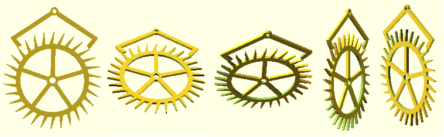The two major parts of a fork are a Crutch or an Arm and a Pallet. A fork has two arms and two pallets - one per arm. The angle under which the pallets are seen from the center of the escape wheel depends on a variable set by the author - the number of teeth of the escape wheel embraced or hugged by the fork. The more teeth are embraced - the larger the angle and conversely.
The escape wheel can rotate in either of two directions - clockwise or counterclockwise, the former by far being the most popular one. If the escape wheel rotates clockwise, as depicted in the drawing below, then the pallet on the left is called an Entry Pallet, \(P_n\), while the pallet on the right is called an Exit Pallet, \(P_x\). If the escape wheel rotates counterclockwise, a less popular but nonetheless an implementable choice, then the pallet on the right would be an Entry Pallet while the pallet on the left would be an Exit Pallet with the remaining definitions that follow reversed accordingly. The direction of rotation of the escape wheel must be decided on ahead of time because it affects the fork's final configuration which is not symmetrical (to avoid the clutter the pendulum is not shown):
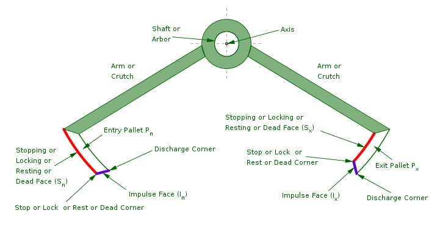Each pallet has two special surfaces or, more commonly, simply Faces. One face is called Dead, or Stopping, or Locking or Resting Face, the other is called an Impulse Face. The stopping face is a portion of a right circular cylinder whose axis of rotation coincides with the axis of the fork. The impulse face is a plane formed by the intersection of the above (stopping) cylinder with another plane running parallel to the fork's or cylinder's axis of rotation.
In this arrangement the stopping face \(S_n\) of the entry pallet is located on its outer side while the stopping face \(S_x\) of the exit pallet is located on its inner side. As such the pallets are not entirely symmetrical. The absence of symmetry is explained by the fact that two different types of motion are forced to interact with each other - circular, in one direction only, of the escape wheel and oscillating, back and forth, of the fork.
The intersection of the stopping and impulse faces forms a Stop, or Lock, or Rest or Dead Corner. The intersection of the impulse face with the face opposite to the stopping face forms the Discharge Corner.
From the above definitions of the stopping and impulse faces it follows that it is possible to make either of them equidistant from the center of the fork. As such there are two major design variations of the fork - when the impulse faces are equidistant from the axis of the fork or when the stopping faces are equidistant from the axis of the fork.
If the impulse faces are equidistant from the axis of the fork then its arms have equal lengths while if the stopping faces are equidistant from the center of the fork then its arms have different lengths. The drawing above depicts a fork with the equidistant impulse faces. Historically there was much debate about which arrangement is better but by now it has been established that there is no major difference between the two performance wise so pick the most technologically convenient one. I will cover the construction of both types of forks.
Unlike the fork the escape wheel is not attached to the pendulum's axis but rather sits on a separate axis of its own. Normally the escape wheel is set in motion with a weight attached to it with a string. As gravity pulls the weight down the weight pulls on the string which in turn pulls on and spins the wheel. After the weight reaches the floor it stops pulling on the escape wheel which eventually comes to a complete stop. Rewind the string to set the escape wheel in motion again:
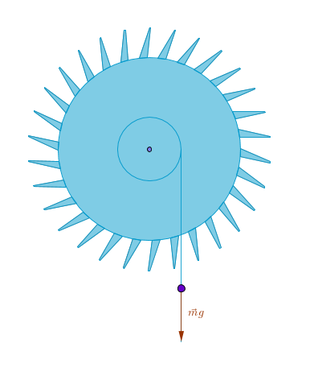
Cycle of Operation
To better understand the cycle of operation of an escapement mechanism let us conduct the following thought experiment. Imagine a fork swinging back and forth by itself in one location and an escape wheel spinning by itself in a different location so that the two are not in contact. Observe that we have two independent motions occurring simultaneously. Nothing particularly interesting is happening. Now let us bring the swinging fork and the spinning wheel closer and closer together until they come into contact in the same plane as spur gears should, engage and start a two-way interaction with each other. The way to determine the exact distance between the centers of the escape wheel and the fork will be explained below.
Now on the one hand, during the moments of their physical contact, the fork puts an end to the escape gear's freewheeling by forcing it to turn at a specific rate which we can calculate ahead of time. On the other hand, the escape wheel passes the potential energy of the attached weight on to the fork in the form of a gentle nudge. The fork passes that energy on to the axis which in turn passes it on to the pendulum thus keeping it swinging at a constant rate.
The upcoming terminology may sound very confusing for a novice because its use is overloaded - the same words are used to describe a process or an event - as verbs and define magnitudes - as nouns. In particular this applies to Lock, Lift and Drop. Not only that - the word drop is used in two different contexts.
Before we deep dive into more details it should be duly noted that from this point onward, in various procedures, steps and definitions I will explicitly avoid specifying any measurements in linear magnitudes. For these procedures, steps and definitions to be truly generic they must be framed in the independent terms - angular in this case. The gears of any physical size can then be drawn - small, medium or large and anything in between.
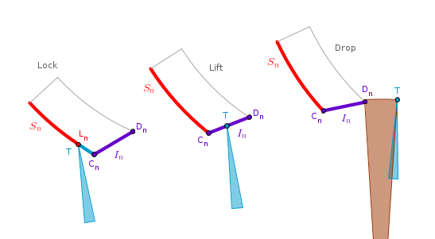In the series of sketches above the escape wheel always runs clockwise and so are the progressive positions of the single depicted tooth. Let us start at the leftmost sketch when the tip \(T\) of the wheel's tooth just kissed the entry pallet \(P_n\) on the (outer) stopping face \(S_n\). The reason this surface is called stopping is because for a brief moment the escape wheel stops rotating since \(S_n\) is in its way.
The exact manner in which the wheel stops is very important - it does so without any recoil which the earlier anchor design suffered from. The absence of recoil during the fork-wheel interaction is one of the key features of Graham's invention. Do keep in mind that even though the wheel stops - the pendulum does not as it and the pallet of the fork keep tracing out circular paths.
As a process or as an event the above kissing moment, which occurs very close to the pendulum's right extreme point, is called a Lock. By analogy with the name of the responsible surface we might as well call it Stop, Rest or Death.
As a purely geometric idea a point or an edge are very convenient notions but in practice the tip of the tooth of the escape wheel should not come into contact with the stopping face \(S_n\) dead on a point or an edge. It should also not land on the impulse face either - that as is easy to imagine would be really bad. So in practice, for a safe mechanism operation, we want the tip of the tooth to land somewhere above the lock corner \(C_n\) at a point we can call a Lock Point \(L_n\). As a magnitude then a Lock is the angle between \(C_n\) and \(L_n\) measured along the circumference of the stopping surface the center of which is located at \(F\). In the drawing below I exaggerated that angle greatly for demonstration purposes. In practice it is usually about \(1^{\circ}\):
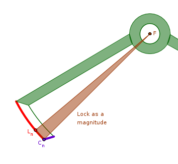After the pendulum reaches its right extreme point and flips its swing from counterclockwise to clockwise the entry pallet's (outer) stopping face \(S_n\) glides upwards for a while, along the stationary tip \(T\), tracing a circular arc, until the entry pallet's lock corner \(C_n\) comes into contact with \(T\). Note that in reality \(C_n\) is an edge - an intersection of a right circular cylinder with a plane running parallel to the cylinder's axis of rotation.
At that moment the wheel resumes its clockwise rotation as nothing stands in its way. The tip \(T\) now kisses the impulse face of the entry pallet \(I_n\), see the second sketch above. As a process it is called a Lift. During that process as \(T\) runs from a lock to a discharge corner, from \(C_n\) to \(D_n\), the fork sweeps a certain angle. A Lift as a magnitude is that angle:
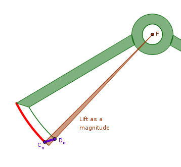It is during that lift, as both the wheel, \(T\), and the fork, \(P_n\), run clockwise, the potential energy is transferred from the wheel to the pallet and hence to the pendulum. That is why \(I_n\) is called an impulse face. To reiterate, the energy is transferred from the wheel to the pallet on the pallet's upswing, against gravity. When \(T\) reaches \(D_n\), the discharge corner, it breaks its contact with the fork. The arithmetic sum of the above two angles, the lock and the lift (or actual lift) is called a Total Lift or an Escape Angle.
At this point the escape wheel runs free but only for a short while as it is soon stopped by the opposite, exit, pallet because the entry pallet swung almost all the way up corresponding to the event of the pendulum almost reaching its left extreme point. This is the exact moment captured in the last sketch above - the angle swept by the escape wheel while running free of contact with either pallet. As a process this freewheeling is called a Drop. It is bracketed by two events - \(T\) breaking contact with the entry pallet and the escape wheel as a whole being stopped completely as its different tooth comes into contact with the exit pallet.
During this process the escape wheel or simply \(T\) sweeps a certain angle. A Drop as a magnitude is that angle - it is highlighted with a different color in the sketch.
The drop as a process occurs once per beat or twice per pendulum's period of oscillation. Once when one tooth is about to kiss the exit pallet while another tooth turns away from the discharge corner of the entry pallet and another time when one tooth is about to kiss the entry pallet while another tooth turns away from the discharge corner of the exit pallet.
After the drop as a process is over the above tooth-pallet interaction scenario plays out again. The wheel's tooth \(T\) kisses the exit pallet's (inner) stopping face \(S_x\), the lock. The pendulum's swing flips from clockwise to counterclockwise. The lock corner \(C_x\) glides into contact with \(T\) which resumes its clockwise run giving \(I_x\) a gentle nudge upwards against gravity, the lift. Note that during this love affair the fork runs counterclockwise while \(T\) runs clockwise until they part their ways. The wheel revolves free for a short while, the drop, but is soon trapped by the entry pallet and the whole process repeats.
To sum up the above cycle at the intuitive, gut level this dynamic duo goes through lock, lift and drop in a potentially never ending succession. The lock and the drop as the magnitudes should be as small as technologically possible.
Keep in mind that not only the stopping faces of the entry and exit pallets are situated differently but the orientation of the impulse faces is different as well. When the pendulum (and the fork) is at rest the impulse face of the entry pallet is closer to a horizontal while the impulse face of the exit pallet is closer to a vertical.
Purpose
Now that we know how the escapement mechanism works let us investigate why is it needed, what is its purpose. Since we already have a pendulum that swings at a known rate, we wish to somehow exploit that regularity by transforming its choppiness into continuousness. That is where the escapement mechanism comes in.
It actually serves two purposes - to convert and to maintain. As a pure time intervals manager the escapement is needed to convert the back and forth motion of a pendulum into a controlled circular motion of the gears. To put it even simpler - escapement translates so many swings into that many rotations. The swings are of the pendulum, the rotations are of the gears.
Let us break down the motion of a pendulum in a more atomic way and introduce a formal concept of a Swing or a Beat. Let us further agree that such a beat is an event of a pendulum reaching one of its extreme points after departing from the opposite extreme point. Using the drawing from the Pendulum chapter a beat corresponds to our pendulum reaching the point \(B\) after departing from the point \(A\). To make it perfectly clear a beat is not a time but an event which occurs after some amount of time goes by.
With the above definition in place we can capture a unique characteristic of any pendulum numerically via its rate or frequency - in the number of beats per unit of time. One convenient unit of time is one minute or \(60\) seconds. Since in time one beat corresponds to half the period, the number of beats per minute \(B_m\) then is:
$$\begin{equation} B_m = \frac {60}{\frac {T}{2}} = \frac {120}{T} \end{equation}$$where \(T\) is given in seconds. Our \(2\)-second pendulum then makes \(60\) beats per minute, for example.
Using the above terms we can say that the escapement mechanism converts a known number of pendulum's beats per minute \(B_m\) into a known number of full revolutions \(R_m\) of a single gear per minute. If we call this special (conversion) gear an Escape Wheel and to that wheel we connect one or more gears the last one of which rotates at the exact rate of one full revolution per minute then we can attach a hand to that wheel which gives us a way to tell seconds.
If to the above second gear we connect one or more gears the last one of which rotates at the exact rate of one full revolution per hour (or \(60\) times slower) and to that wheel we attach a hand then we have a way to tell minutes.
Finally, if to the above minute gear we connect one or more gears the last one of which rotates at the exact rate of one full revolution in \(12\) hours (or \(12\) times slower) and to that wheel we attach a hand then we have a way to tell hours, the clock is complete and we can ... sell it. Just kidding.
Our idealized pendulum may swing forever but a real one of course will not. The friction and the air resistance will eat away the initial energy given to the pendulum by our muscle power. If left unattended such a pendulum will not swing at a constant rate - it will slow down over time until it stops completely.
In addition to a conversion role the escapement mechanism is used to address this gradual slow down phenomena by taking on an extra role of a constant rate of swings maintainer. We have covered the exact way this is done in the cycle of operation section above. The energy transfer from the wheel to the fork in the form of gentle pushes or nudges must be carefully orchestrated. These nudges can not be haphazard and frivolous but rather must be doled out in precise and delicate dosages - not too large as they will disrupt the workings of the entire mechanism and not too small as they will have no meaningful effect. Put it another way, the escapement mechanism releases the potential energy of the weight or the elastic potential energy of a spring in small chunks (quanta) over a prolonged period of time. The devil here is in the construction details and that is what we will look at next.
The Deadbeat Escape Wheel
The deadbeat escape wheel is a special \(n\)-tooth spur gear that must mesh with another special two-tooth spur gear - a fork. If at this point you are not familiar with gears you should acquire some basic knowledge about them out of band since this knowledge will be much needed. I list a few gear-related books at the end of the Hands chapter but the crash course on gears as they relate to us is this.
Conceptually gears are levers. Practically they can be classified roughly by the relative position of their axes in space - parallel, intersecting, neither. Physically gears are implemented based on surfaces capable of rolling without slipping. The most popular surfaces are right cylinders, truncated cones and hyperboloids, circular or elliptic. If two engaged gears rotate smoothly without blocking and vibration it is said that they mesh. Two or more gears connected for a purpose are called a Gear Train. The purpose usually is to convert a known input into a desired output.
A gear to which an input or power is applied directly is called a Driving or an Input Gear and a gear affected by it is called a Driven or a Follower or an Output Gear. A Gear Ratio \(r_{io}\) of two gears is:
$$\begin{equation} r_{io} = \frac {\omega_i}{\omega_o} = \frac {N_o}{N_i} \end{equation}$$where \(\omega\) designates an angular velocity and \(N\) designates a tooth count of the gears. If in a gear train we carve out a path from the input gear to the gear of interest, possibly the last one, and calculate the gear ratio of all the pairs in between then by taking the product of all these ratios we will arrive at the gear ratio of an aggregate - the whole or part of a train. To calculate the gear ratio of a current pair in the above set make the output gear of the previous pair an input gear for the current one. We will look at the gear trains in a bit more detail in the Hands chapter.
In clock making we are interested in a special type of gears that mesh in the same plane, have parallel axes and straight teeth. Such gears are called Spur Gears. They are distinguished further by the shape of their teeth or by a particular type of a plane curve used to construct them. A Cycloid was an early choice but later on an Involute of a Circle became very popular as its use lead to gears that performed better under high speeds and heavy loads. An involute of a circle is a plane curve traced by a point at the end of a taut string as it unwinds off of or winds around the circumference of a stationary circle. Clock gear trains, however, are unlike most of their industrial cousins. They turn very slowly under very light loads. As such it is perfectly fine to use either cycloidal or involute tooth profiles in your projects.
The deadbeat escape wheel, as I mentioned before, is a special animal as its teeth can be made triangular in shape and in theory arbitrary in number. In practice, however, certain tooth counts have an advantage over the others. To see why let us task ourselves with a requirement of designing a clock with the smallest number of gears practically possible. The question then is - how many teeth must the escape wheel have for it to make one full revolution in exactly one minute? If we find the answer to that question then we can attach a second hand to the escape wheel directly and use it to drive the minute and hour gears.
Since the escapement mechanism is designed in such a way that each extremity of the fork engages one tooth of the escape wheel once per period of oscillation then we can equate the number of such engagements to the number of teeth of the escape wheel \(N_m\) where sub index \(m\) designates the chosen time interval of one minute or \(60\) seconds. It follows then that if one engagement occurs in \(T\) seconds then \(N_m\) engagements occur in a given time interval or \(60\) seconds:
$$N_m \times T = 60$$ $$\begin{equation} N_m = \frac {60}{T} \end{equation}$$Our \(2\)-second pendulum then should have a \(30\)-tooth escape wheel which will make one full revolution in one minute. Keeping the one full revolution per minute requirement the \(1\)-second pendulum should have a \(60\)-tooth escape wheel, the \(4\)-second pendulum should have a \(15\)-tooth wheel and so on.
Now that we have a connection between \(T\) and \(N_m\) instead of deciding on the value of \(T\) we may decide on the value of \(N_m\). If we solve (3) for \(T\) and substitute it into the length of pendulum's rod formula we can dispense with the period altogether and calculate \(l\) as a function of \(N_m\):
$$T(N_m) = \frac {60}{N_m}$$ $$l(N_m) = \frac {g}{4\pi^2}\frac{T^2}{S^2} = \frac {g}{4\pi^2}\frac{3600}{N_m^2S^2}$$ $$\begin{equation} \bbox[#e8e8e8,3pt]{l(N_m) = \frac {900g}{(\pi N_m S)^2}} \end{equation}$$For example, if we take \(S = 1\) and wish to have a \(40\)-tooth escape wheel then a rough estimate for \(l\) for NYC, NY, is \(55.87\) centimeters. For a \(50\)-tooth wheel we get roughly \(35.76\) centimeters and so on.
As we can see we can drive the design of our clock by a number of parameters. We can fix \(T\) to obtain \(N_m\) and \(l\), we can fix \(N_m\) to obtain \(l\) and \(T\) or we can fix \(T\) to obtain \(l\) and pick an arbitrary number of teeth for the escape wheel, \(N\), without imposing the one full revolution per minute requirement on it.
In the latter case let us say we want a \(50\)-tooth escape wheel for a \(2\)-second pendulum. In this case the wheel will make one full revolution every \(50 \times 2 = 100\) seconds. As an option, since we, the designers, are in control, we may choose to not have the second hand at all. Since there are \(3600\) seconds in one hour, our \(50\)-tooth escape wheel will make \(3600 \div 100 = 36\) full revolutions. Consequently, to the above \(50\)-tooth escape wheel we attach a \(36:1\) gear train the last gear of which will make one full revolution in exactly one hour, we attach the minute hand to that gear and proceed on to the hour hand as usual.
Keep in mind that whether we impose the one full revolution per minute requirement on the escape wheel or not it still has to interact with the fork. As such between two consecutive engagements with the same pallet, entry or exit, or per period of oscillation the escape wheel will turn:
$$\begin{equation} \theta_T = \frac {360^{\circ}}{N} \end{equation}$$degrees where \(N\) is the escape wheel's tooth count. However, between two consecutive engagements with the opposite pallets, first entry and then exit, or per beat the escape wheel will turn half of the above value:
$$\begin{equation} \theta_b = \frac {\theta_T}{2} = \frac {180^{\circ}}{N} \end{equation}$$It follows then that if we attach a second hand directly to the escape wheel then per beat that hand will sweep \(\theta_b\) degrees. To translate that angular measure into the corresponding number of seconds swept by the second hand per beat we need to divide \(\theta_b\) by \(6\) degrees - the angular distance between the one-second/one-minute gradation marks on a traditional clock face:
$$\begin{equation} sec_b = \frac {\theta_b}{6^{\circ}} = \frac {30}{N} \end{equation}$$It should be clear now why some tooth counts for an escape wheel are more advantageous than the others. For our \(2\)-second pendulum the \(30\)-tooth escape wheel will turn \(6\) degrees per beat making the second hand attached to it sweep exactly one-second intervals - a perfect fit as long as we align the clock face with gradations on it properly. For the upcoming drawing procedure, however, it does not really matter exactly how you came up with the escape wheel's tooth count. You just have to settle on a number.
Before we move on to the drawing steps we will need to get acquainted with a small amount of basic terminology.
Wheel Anatomy
Since all our gears are spur gears, when I say "a gear" it should be taken to mean "a spur gear" unless otherwise noted. A spur gear is based on a right circular cylinder or simply cylinder from now on. If we cut such a cylinder with a plane perpendicular to the cylinder's axis of rotation a circular surface will result. This surface is called a Face of a gear. The edges of the gear's teeth are straight lines that run parallel to the cylinder's axis of rotation and as such they are perpendicular to the gear's face. That is what is meant when we say that the teeth of a spur gear are straight.
The largest circle of a gear's face is called an Outer or an Addendum or a Tip Circle. Its radius is a linear distance from the center of a gear to the outer tips of its teeth. Since we are dealing with a circle, by definition all the outer tips of all the teeth are equidistant from the center of the gear:
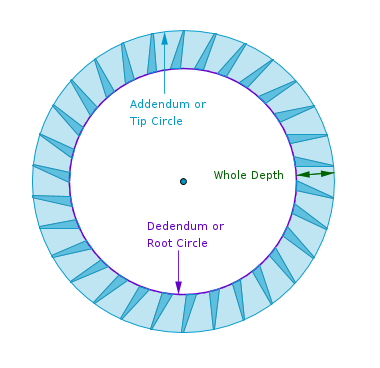On the same face of a gear there is a circle on the circumference of which the roots of the gear's teeth sit. That circle is called a Root or a Dedendum Circle. The radius of a root circle is also a linear measure. The difference between the radii of the outer and root circles which determines a linear height of the gear's teeth is called a Whole Depth.
Tooth Anatomy
It is possible to use a number of different tooth profiles for a deadbeat escape wheel. We will settle on a triangular profile - a shape trapped between two straight lines - the Leading Line and the Trailing Line. The tip of a tooth is located on the circumference of the tip circle. The root of a tooth is located on the circumference of the root circle. A small portion of the leading line close to the tip of a tooth comes into a direct contact with the pallets. No points on the trailing line come into contact with the pallets.
Let us call the angle between the tip radius and the trailing line the Trailing Angle \(\theta_t\):
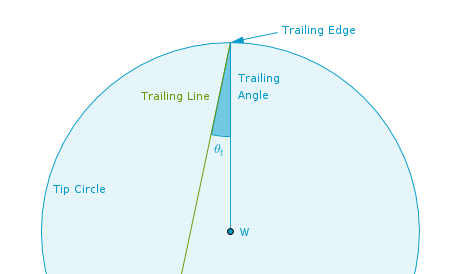Since in practice the very tip of a tooth is not exactly sharp, let us call the angle under which the two tooth tip edges are seen from the center of the gear the Central Angle \(\theta_c\). In the drawing below the magnitude of the central angle is exaggerated greatly for demonstration purposes. In practice it is about \(0.5^{\circ}\). Let us further agree that the two corresponding points (edges) on the circumference of the tip circle are the Trailing Edge and the Leading Edge:
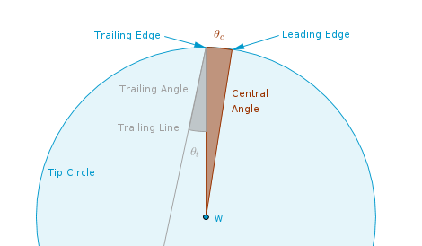Lastly, we will undercut our teeth by an arbitrary angle which the leading line forms with the tip radius of a gear. Let us call that angle the Leading Angle \(\theta_l\). The purpose of the undercutting is to make the surface area of contact between the leading edge of a tooth and a pallet smaller which in turn will make the friction between the two smaller. The undercutting also makes the teeth of the escape wheel lean in the direction of rotation:
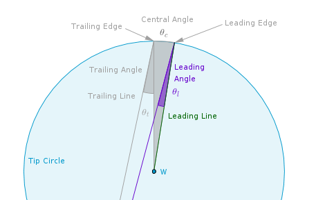Using the triangles involved we can work out the magnitude of the Included Angle of a tooth \(\theta_i\) - the angle between the trailing and leading lines:
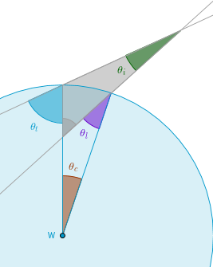 $$\theta_i + (180^{\circ} - \theta_t) + (\theta_c + \theta_l) = 180^{\circ}$$ $$\theta_i = \theta_t - \theta_c - \theta_l$$Let us also agree to call the central angle under which two like edges of two adjacent teeth are seen from the center of the escape wheel the Angular Pitch \(ap\):
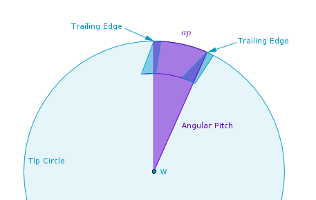The Angular Pitch is derived by dividing \(360^{\circ}\) by the number of teeth of the escape wheel.
With the above definitions in place the tooth, the wheel and the fork construction procedures become transparent.
To Draw the Deadbeat Escape Wheel
In the long run, in a steady state of making clocks it is very likely that you will be using software to draw the gears. However, it will not hurt to know how to do it manually yourself.
Before drawing a deadbeat escape wheel choose:
1) Direction of rotation
2) Tooth count \(N\)
3) Tip radius \(R_t\)
4) Root radius \(R_r\)
5) Tooth Trailing Angle \(\theta_t\)
6) Tooth Central Angle \(\theta_c\)
7) Tooth Leading Angle \(\theta_l\)
For the following demonstration the choices are:
1) Direction of rotation: clockwise
2) Tooth count \(N = 30\)
3) Tip radius \(R_t\)
4) Root radius \(R_r = 0.75 \times R_t\)
5) Tooth Trailing Angle \(\theta_t = 18.5^{\circ}\)
6) Tooth Central Angle \(\theta_c = 0.5^{\circ}\)
7) Tooth Leading Angle \(\theta_l = 6^{\circ}\)
It follows then that:
$$\theta_i = 18.5^{\circ} - 0.5^{\circ} - 6^{\circ} = 12^{\circ}$$and:
$$ap = 360^{\circ} \div N = 12^{\circ}$$Procedure:
1) Draw a straight line of centers \(c\). The centers of the escape wheel and the fork will be on it, pick a convenient orientation.
2) With the center \(W\) on \(c\) and the radius \(R_t\) draw the tip circle \(t\).
3) With the center at \(W\) and the radius \(R_r\) draw the root circle \(r\).
4) Let \(A\) be one of the intersections points of \(c\) and \(t\):
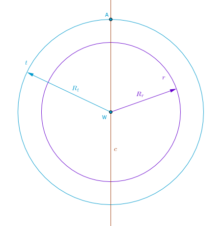5) Construct one tooth starting with the Trailing Angle. With \(W\) as a leg point and \(A\) as a vertex draw the Trailing Angle \(\theta_t\) in the chosen direction, clockwise in this case. Let \(D\) be the intersection of the remaining side \(\tau\) of \(\theta_t\) with the root circle \(r\) so that \(\theta_t = \angle WAD\).
6) With \(A\) as a leg point and \(W\) as a vertex draw the Central Angle \(\theta_c\) in the chosen direction, clockwise in this case. Let \(B\) be the intersection of the remaining side \(\sigma\) of \(\theta_c\) with the tip circle \(t\) so that \(\theta_c = \angle AWB\).
7) With \(W\) as a leg point and \(B\) as a vertex draw the Leading Angle \(\theta_l\) in the chosen direction, clockwise in this case. Let \(C\) be the intersection of the remaining side \(\lambda\) of \(\theta_l\) with the root circle \(r\) so that \(\theta_l = \angle WBC\):
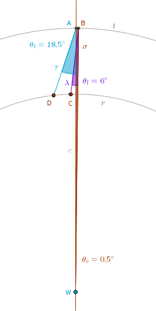At this point the shape \(ABCD\) delineates one tooth. \(DA\) is the trailing line (plane), \(A\) is the trailing edge, \(B\) is the leading edge, \(BC\) is the leading line (plane) and \(DC\) is the root:
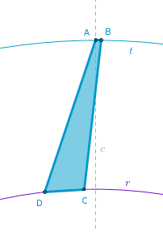Using your software's features repeat the steps 4-7 the remaining \(N - 1\) times rotating the reference straight line \(c\) by the magnitude of the Angular Pitch \(ap\) about the center of the escape wheel \(W\) each time if needed. Most types of graphing software have a feature called Rotate. You can either rotate the whole tooth or if your software can not do that then rotate each point separately.
Once all the teeth are in place make sure that you have marked the center of the escape wheel clearly. Draw a small circle around the center of the wheel to represent the opening for its shaft:
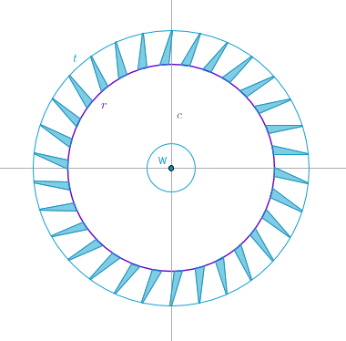This is where the science mostly ends and the art mostly begins. Draw the spokes of the wheel making them regular in shape or ornamental - your imagination is the only limit at this point. Keep in mind that the escape wheel should possess two conflicting qualities. On the one hand, it should be made as light as possible - hollow it out a lot and on the other hand, the wheel and its teeth should be sturdy enough to withstand the many many happy hours of operation. In other words balance the light and hollow against the sturdy and true.
To Draw The Deadbeat Fork
The exact location of the center of the fork depends on the size and the tooth count of the escape wheel it will mesh with. As such - draw the escape wheel first or at least highlight the locations of some number of needed teeth. The procedure to do so is described above.
Next, before drawing the fork choose:
1) The number of teeth of the escape wheel the fork will span, \(N_s\)
2) The lock angle, \(\theta_l\)
3) The lift angle, \(\theta_f\)
4) The drop angle, \(\theta_d\) It should include the magnitude of the Central
Angle of a tooth \(\theta_c\) chosen in the previous procedure.
For the following demonstration the choices are:
1) \(N_s = 7.5\)
2) \(\theta_l = 1^{\circ}\)
3) \(\theta_f = 2^{\circ}\)
4) \(\theta_d = 1^{\circ} = \theta_c + 0.5^{\circ}\)
Procedure:
1) Locate the center of the fork.
Multiply \(N_s\) by the Angular Pitch of the escape wheel \(ap\) to obtain the Span Angle of the fork \(\theta_s\). In our case we get \(\theta_s = 7.5 \times 12^{\circ} = 90^{\circ}\) or in general:
$$\theta_s = N_s \times \frac {360^{\circ}}{N}$$2) Divide the Span Angle \(\theta_s\) in half.
With \(W\) as a vertex and \(A\) as a leg point construct each half of \(\theta_s\) on either side of the line of centers \(c\) - one half clockwise and the other half counterclockwise. In our case each half is \(45^{\circ}\). Let \(T_n\) and \(T_x\) be the intersections of the remaining sides \(s_n\) and \(s_x\) of the half-angles with the tip circle \(t\).
3) Construct a tangent \(\tau_n\) to \(t\) through \(T_n\).
4) Construct a tangent \(\tau_x\) to \(t\) through \(T_x\).
5) The intersection point of \(\tau_n\) and \(\tau_x\) with the line of centers \(c\) locates the center of the fork \(F\):
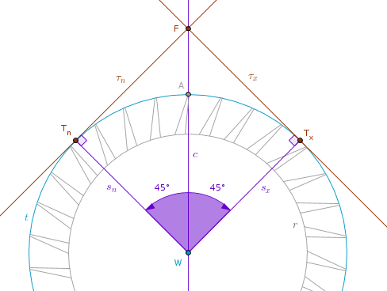From this it follows that analytically the distance between the centers of the escape wheel and the fork \(WF\) and the distances \(FT_n\) and \(FT_x\) are:
$$WF = \frac {R_t}{\cos\Big(\pi \frac {N_S}{N}\Big)}$$ $$FT_n = FT_x = R_t\tan\Big(\pi \frac {N_S}{N}\Big)$$6) Find the radial width of the fork's pallets.
This is where the procedures for two different types of forks diverge. Let us first construct a fork with the equidistant impulse faces. Since we have two pallets each of which invades the space between two adjacent teeth, it follows that the single intertooth space should be split equally between each pallet and in addition it should have some wiggle room - the drop which includes the central angle of a tooth or its thickness along the circumference of the tip circle. Without the drop the pallets would fill the space between the teeth too tight and the whole mechanism would likely malfunction.
From the Cycle of Operation section we remember that the drop as a process occurs once per beat or twice per pendulum's period of oscillation. Therefore divide the Angular Pitch of the escape wheel \(ap\) in half: \(12^{\circ} \div 2 = 6^{\circ}\). And then subtract the magnitude of the drop angle from that half to find the radial width angle \(\theta_w\) of both pallets under which they are seen from the center of the escape wheel: \(\theta_w = 6^{\circ} - 1^{\circ} = 5^{\circ}\) or in general:
$$\theta_w = \frac {360^{\circ}}{2N} - \theta_d$$Since we are drawing a fork with the impulse faces equidistant from its center \(F\), the point \(T_n\) divides the radial width of both pallets exactly in half. Therefore \(\theta_w\) must be split equally between each half: divide \(\theta_w\) by \(2\) and construct each half-anlge on each side of the straight line \(s_n\) (\(WT_n\)) using \(T_n\) as a leg point and \(W\) as a vertex. In our case we get the \(2.5^{\circ}\) angles:
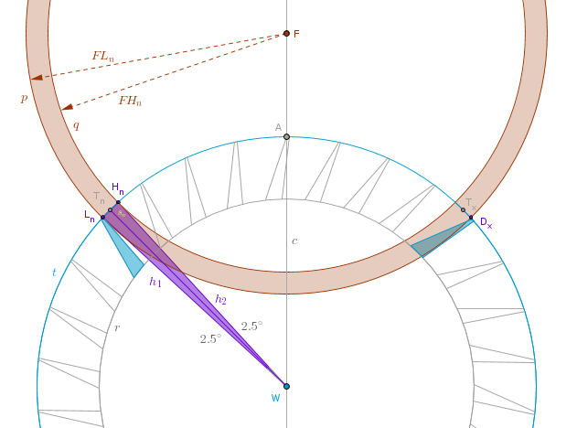7) Let \(L_n\) and \(H_n\) be the intersections of the remaining sides \(h_1\) and \(h_2\) of the above half-angles with the tip circle \(t\) such that \(\angle L_nWT_n = \angle H_nWT_n = 2.5^{\circ}\). Draw a circle \(p\) centered at \(F\) with the radius \(FL_n\). Draw a circle \(q\) centered at \(F\) with the radius \(FH_n\). The space between \(p\) and \(q\) is the radial width of both pallets. The stopping face of the entry pallet will be located on the circumference of \(p\). The stopping face of the exit pallet will be located on the circumference of \(q\).
Note that the point \(L_n\) lands exactly on the leading edge of the highlighted tooth. Further, let \(L_n\) be the lock point from the Cycle of Operation sketches above. Incidentally, this event - a tooth coming into a contact with a pallet - is confusingly called a drop elsewhere in literature where it is sometimes said that the tooth drops onto the pallet. We shall avoid this confusion and call this event a lock.
For the OpenSCAD drawing we observe here that we obtain the magnitudes of the outer and the innder radii of the fork \(FL_n\) and \(FH_n\) using the law of cosines since all the angles and required sides of the triangles are known:
$$FL_n^2 = R_t^2 + WF^2 - 2R_t \times WF \times \cos\Big( \frac {\theta_s}{2} + \frac {\theta_w}{2}\Big)$$ $$FH_n^2 = R_t^2 + WF^2 - 2R_t \times WF \times \cos\Big( \frac {\theta_s}{2} - \frac {\theta_w}{2}\Big)$$and since all three sides and one angle are known in each triangle \(\triangle WL_nF\) and \(\triangle WH_nF\), the remaining angles can be found using the law of sines.
8) Locate the discharge corner of the exit pallet.
Let \(D_x\) be the intersection point of the tip circle \(t\) with \(p\) on the \(T_x\) side (see the drawing above). It may be difficult to see in the drawing but \(D_x\) should not coincide with the trailing edge of the highlighted tooth. There should be some amount of wiggle space between the two - the magnitude of the drop angle. The point \(D_x\) is the discharge corner of the exit pallet.
9) Locate the lock corner of the entry pallet.
Using \(L_n\) as a leg point and \(F\) as a vertex construct the lock angle in the direction opposite to the chosen one, counterclockwise in this case. Let \(C_n\) be the intersection of the remaining side \(l\) of the lock angle with \(p\) so that \(\theta_l = \angle L_nFC_n\). In our case this angle is \(1^{\circ}\) and \(C_n\) is the lock corner of the entry pallet.
10) Locate the discharge corner of the entry pallet.
Using \(C_n\) as a leg point and \(F\) as a vertex construct the lift angle in the direction opposite to the chosen one, counterclockwise in this case. Let \(D_n\) be the intersection of the remaining side \(f\) of the lift angle with \(q\) so that \(\theta_f = \angle C_nFD_n\). In our case this angle is \(2^{\circ}\) and \(D_n\) is the discharge corner of the entry pallet.
11) To construct the impulse face of the entry pallet connect \(C_n\) and \(D_n\). The entry pallet is now complete:
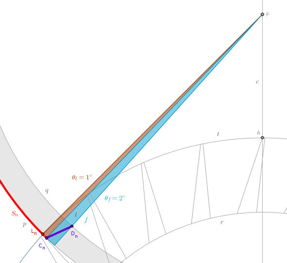Finish constructing the exit pallet. At this point all we have to do is construct its impulse face by locating its lock corner in either of two ways - using either the angles or the circles.
12.1) To locate the lock corner of the exit pallet via the angles use \(D_x\) as a leg point and \(F\) as a vertex to construct the lift angle \(\theta_f\) in the direction opposite to the chosen one, counterclockwise in this case. Let \(C_x\) be the intersection of the remaining side \(f\) of the lift angle and \(q\) so that \(\theta_f = \angle D_xFC_x\). The point \(C_x\) is the lock corner of the exit pallet and \(C_xD_x\) is its impulse face:
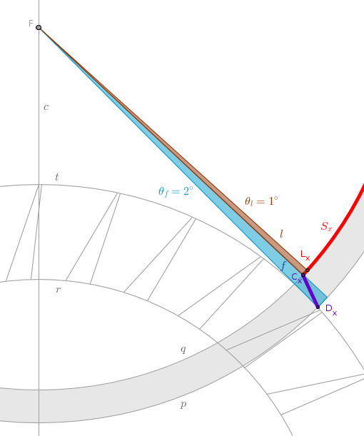Optionally you may locate the lock point of the exit pallet \(L_x\) as it may be used in the last step of the fork construction. Using \(C_x\) as a leg point and \(F\) as a vertex construct the lock angle \(\theta_l\) in the direction opposite to the chosen one, counterclockwise in this case. Let \(L_x\) be the intersection of the remaining side \(l\) of the lock angle with \(q\) so that \(\theta_l = \angle C_xFL_x\). The point \(L_x\) is the lock point of the exit pallet.
12.2) To locate the lock corner of the exit pallet via the circles extend the straight line \(C_nD_n\) of the impulse face of the entry pallet towards the center of the fork \(F\). Let us name this extended straight line \(i_n\). Construct a perpendicular \(o_n\) to \(i_n\) through \(F\) to locate their intersection point \(N\). Construct a circle \(m\) centered at \(F\) with the radius \(FN\).
Let us call this circle an Impulse Circle. You probably have figured out by now that the extension of the impulse face of the exit pallet must also be tangent to the Impulse Circle - just like the extension of the impulse face of the entry pallet is. So all we have to do now is construct a tangent to the Impulse Circle through \(D_x\). In the Elements, Book \(3\) Proposition \(17\), Euclid does just that but in a rather complicated way - for academic reasons.
A bit simpler way is to bisect the line segment \(FD_x\) to obtain the point \(Y\) on it such that \(FY = YD_x\) and then to construct a circle centered at \(Y\) with the radius \(YF\). That circle will intersect \(m\) at two points of which we need only one - the point \(X\). The straight line passing through \(X\) and \(D_x\) is the tangent sought-after. The intersection of that tangent with \(q\) and \(p\) locates the impulse face of the exit pallet and its lock corner \(C_x\). This is a bit more involved construction but we trade complexity for the depth of understanding - as the fork swings back and forth the points \(N\) and \(X\) also swing back and forth - along the circumference of the Impulse Circle:
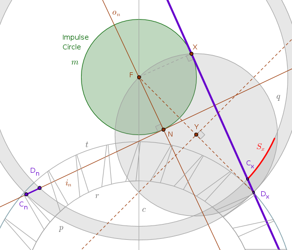One consequence of using the Impulse Circle is that if you decide to make the pallets composite - attachable to and detachable from the arms - then you can construct the auxiliary pallets on \(p\) and \(q\) by picking an appropriate points on them and then constructing the tangents to the Impulse Circle to locate the impulse faces of both pallets. Before we look at this procedure let us finish constructing the fork.
13) Finish constructing the fork.
This is where the science mostly ends and the art mostly begins. Just make sure that the arms of the fork are symmetrical about the line of centers \(c\) and that the lengths of the internal arcs along \(q\) - the arc \(Q_nD_n\) and the arc \(Q_xC_x\) - are large enough to secure the free movement of the fork so that its arms do not hit the tips of the teeth of the escape wheel during the engagements. Other than that you can make the space trapped above the teeth and below the arms of the fork as decorative as you wish. When and if decorating the outer portion of the fork make sure that the adjacent gears can run freely.
In the drawing below the angles used to locate the points \(Q_n\) and \(Q_x\) are shown. The reason the magnitudes of these angles are different is because the line of centers \(c\) always remains strictly vertical but the axis of facial symmetry of the fork \(FW'\) does not as it swings with the pendulum and we constructed the fork when it is caught in one of its extreme positions. Therefore you can either construct these angles based on the line of centers \(c\), as shown, or based on the line of symmetry \(FW'\). The procedure to find \(FW'\) is also shown: extend the straight line \(FL_x\) until it intersects \(p\) at \(L'_x\), bisect the line segment \(L_nL'_x\):
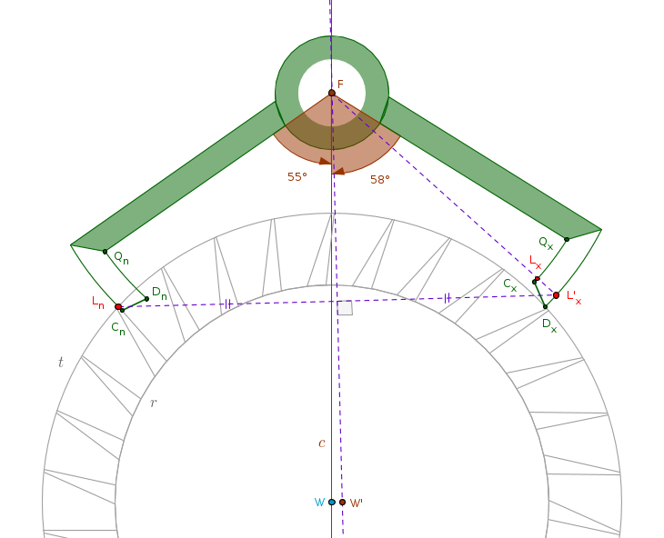If using \(FW'\) - make \(\angle W'FQ_n = \angle W'FQ_x = \theta\) where \(\theta\) is a number you pick. If using \(c\) - compensate for the deviation of \(FW'\) from \(c\):
$$\angle WFQ_n = \theta - \frac {\theta_l + \theta_f}{2}$$ $$\angle WFQ_x = \theta + \frac {\theta_l + \theta_f}{2}$$To construct a set of auxiliary pallets in one drawing reflect the point \(C_n\) about the point \(O_n\), for example. Construct a circle centered at \(O_n\) with the radius \(O_nC_n\). That circle will intersect \(p\) at \(C'_n\). Construct a tangent to \(m\) through \(C'_n\). That tangent, \(C'_nN'\) will intersect \(q\) at \(D'_n\). The line segment \(C'_nD'_n\) is the impulse face of an auxiliary entry pallet:
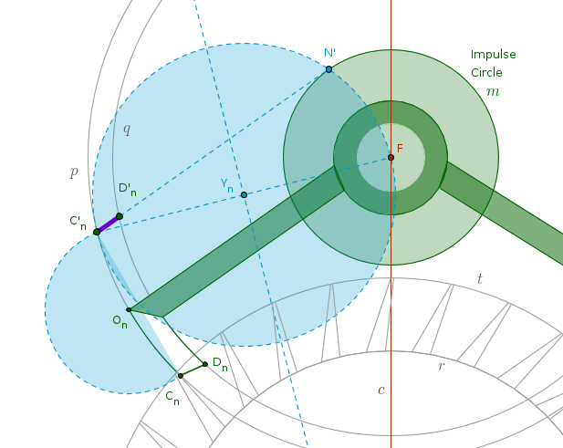When constructing the impulse face of an auxiliary exit pallet (not shown) draw the tangent to the impulse circle towards the center of the escape wheel \(W\).
Now that we understand how to construct a fork with equidistant impulse faces the procedure to construct a fork with equidistant stopping faces requires little new material. We go back to the drawing where we have located the center of the fork \(F\). The points \(T_n\) and \(T_x\) now must belong to the stopping surfaces \(S_n\) and \(S_x\) of both pallets. As such - construct a circle \(p\) centered at \(F\) with the radius \(FT_n = FT_x\). The radial width of the entry pallet will extend inside \(p\) towards \(F\) while the radial width of the exit pallet will extend outside of \(p\) away from \(F\).
6') Construct the radial width of the entry pallet.
Assume that the tooth of the escape wheel just kissed (locked on to) the entry pallet.
By analogy with the equidistant impulse faces construction it means the points \(T_n\)
and \(L_n\) are the same - the point \(T_n\) now plays the role of the lock point of
the entry pallet.
With \(W\) as a vertex and \(T_n\) as a leg point construct the \(\theta_w\) angle in the direction opposite to the chosen one, counterclockwise in this case. The intersection of the remaining side \(h_n\) of \(\theta_w\) with \(t\) locates \(H_n\). Construct a circle \(q_n\) centered at \(F\) with the radius \(FH_n\). The space between \(p\) and \(q_n\) is the radial width of the entry pallet:
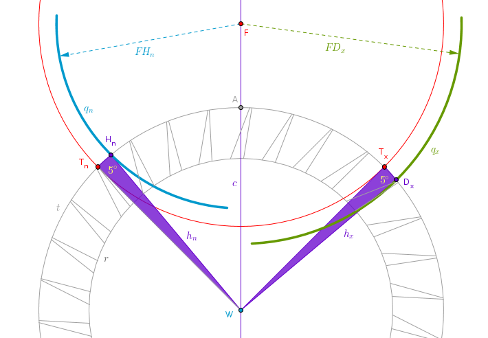7') Construct the radial width of the exit pallet.
Since \(T_x\) belongs to two circumferences at once - that of the tip circle and that of the impulse face, we can use it as a leg point to find the radial width of the exit pallet. By doing so we will automatically locate one of the extreme points of the exit pallet - its discharge corner. This is similar to what we did in the equidistant impulse faces construction process.
With \(W\) as a vertex and \(T_x\) as a leg point construct the \(\theta_w\) angle in the chosen direction, clockwise in this case. The intersection of the remaining side \(h_x\) of \(\theta_w\) with \(t\) locates \(D_x\). Construct a circle \(q_x\) centered at \(F\) with the radius \(FD_x\). The space between \(p\) and \(q_x\) is the radial width of the exit pallet and \(D_x\) is its discharge corner.
Once the lock point of the entry pallet and the discharge corner of the exit pallet are located the remaining equidistant impulse faces constructions steps \(8\) through \(13\) can be repeated verbatim.
Note that in the sample procedure above I chose a lock point on the stopping face of the entry pallet to start the construction. You might choose the stopping face of the exit pallet for that purpose just as well.
If you want to construct an escape wheel which rotates counterclockwise simply change the directions specified in the above procedures to the opposite.
\(\blacksquare\)